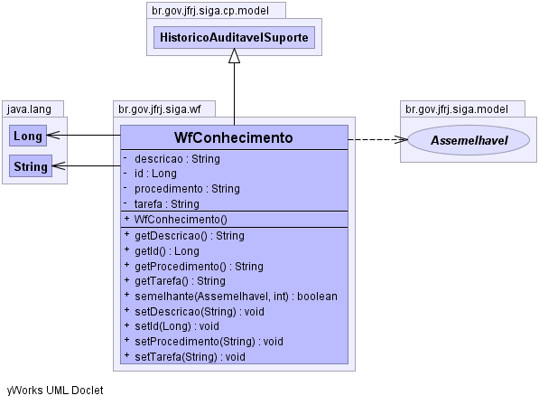

br.gov.jfrj.siga.wf
Class WfConhecimento
java.lang.Object
 br.gov.jfrj.siga.model.ObjetoBase
br.gov.jfrj.siga.model.Objeto
br.gov.jfrj.siga.cp.model.HistoricoSuporte
br.gov.jfrj.siga.cp.model.HistoricoAuditavelSuporte
br.gov.jfrj.siga.wf.WfConhecimento
br.gov.jfrj.siga.model.ObjetoBase
br.gov.jfrj.siga.model.Objeto
br.gov.jfrj.siga.cp.model.HistoricoSuporte
br.gov.jfrj.siga.cp.model.HistoricoAuditavelSuporte
br.gov.jfrj.siga.wf.WfConhecimento
- All Implemented Interfaces:
- HistoricoAuditavel, Assemelhavel, Historico
public class WfConhecimento
- extends HistoricoAuditavelSuporte
Classe que representa o conhecimento a respeito da execução de uma tarefa do
sistema de workflow.
-
-

| Methods inherited from class br.gov.jfrj.siga.cp.model.HistoricoSuporte |
ativoNaData, equivale, getHisAtivo, getHisDtFim, getHisDtIni, getHisIdIni, getIdInicial, isHisAtivo, setAtivo, setHisAtivo, setHisDtFim, setHisDtIni, setHisIdIni |
| Methods inherited from class java.lang.Object |
clone, finalize, getClass, hashCode, notify, notifyAll, wait, wait, wait |
id
private java.lang.Long id
procedimento
private java.lang.String procedimento
tarefa
private java.lang.String tarefa
descricao
private java.lang.String descricao
WfConhecimento
public WfConhecimento()
getId
public java.lang.Long getId()
setId
public void setId(java.lang.Long id)
getProcedimento
public java.lang.String getProcedimento()
setProcedimento
public void setProcedimento(java.lang.String procedimento)
getTarefa
public java.lang.String getTarefa()
setTarefa
public void setTarefa(java.lang.String tarefa)
getDescricao
public java.lang.String getDescricao()
setDescricao
public void setDescricao(java.lang.String descricao)
semelhante
public boolean semelhante(Assemelhavel obj,
int profundidade)